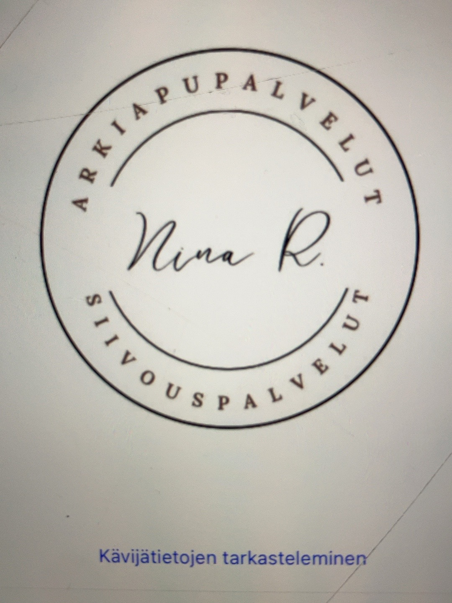
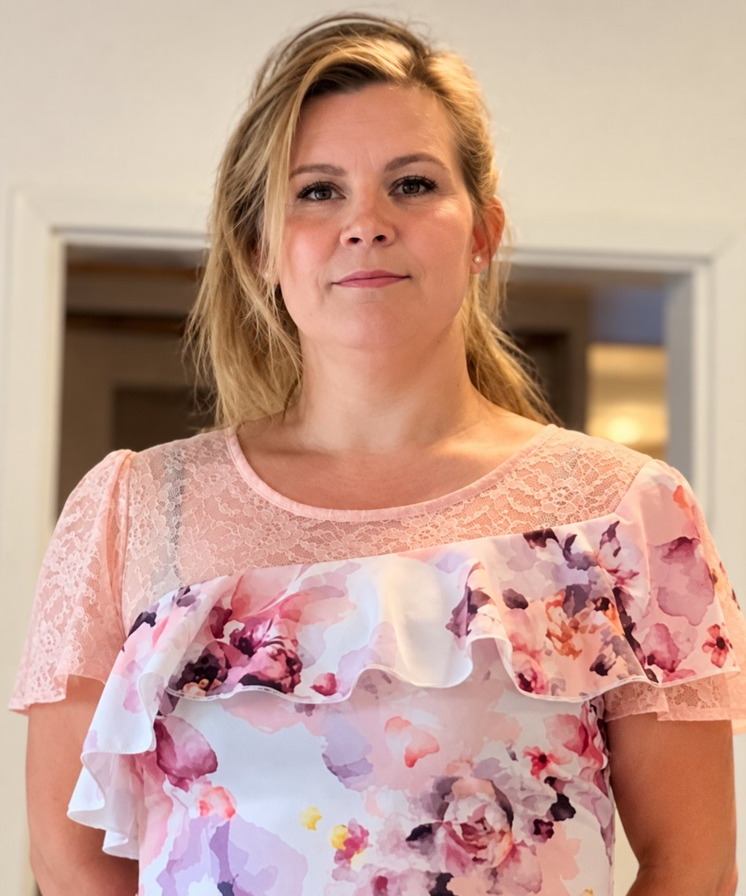

Hyvää arkea, huolella.
Luotettavaa kotisiivousta ja lämminhenkistä arkiapua. Saat henkilökohtaista apua kodin askareisiin ja enemmän aikaa sinulle tärkeisiin asioihin.
Ota yhteyttä
Apua juuri sinun arkeesi
Kotisiivous
Säännöllinen tai yksittäinen kodin siivous tarpeidesi mukaan.
Ikäihmisten arkiapu
Rauhallista ja henkilökohtaista apua kodin askareisiin ja arjen sujumiseen.
Kodin askareet
Apua arjen pieniin ja suuriin tehtäviin sopimuksen mukaan.
Hinnasto
47 € / h
Hinta sisältää arvonlisäveron.
Mahdolliset matkakulut, minimiveloitus ja muut ehdot sovitaan erikseen ennen työn aloittamista.
Hei, olen Nina!
Olen koulutukseltani lähihoitaja ja tarjoan kotisiivousta sekä arjen apua henkilökohtaisesti ja luotettavasti.
Minulle on tärkeää, että jokainen asiakas tulee kohdatuksi yksilöllisesti ja että hänen kotonaan on hyvä olla.
Hoidan asiakaskäynnit itse, joten saat avuksesi tutun ihmisen. Autan niin kodin siisteydestä huolehtimisessa kuin arjen pienissä ja suuremmissakin askareissa.
Palvelen Vihdissä, Lohjalla ja Karkkilassa sekä sopimuksen mukaan Espoossa, Helsingissä ja Vantaalla.
Kerro, millaista apua tarvitset
Voit ottaa yhteyttä puhelimitse, tekstiviestillä tai sähköpostilla. Asiakaskäyntien aikana en aina voi vastata puhelimeen. Voit jättää tekstiviestin tai lähettää sähköpostia, niin otan yhteyttä mahdollisimman pian.
Puhelin: 045 7837 5514
Sähköposti: nina.ruosteoja@outlook.com